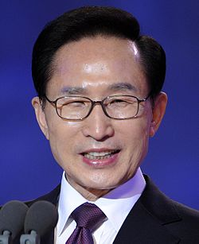

이명박(李明博, 1941년 12월 19일 ~ )은 대한민국의 제17대 대통령이다. 본관은 경주이다. 호는 원래 일송(一松)이나 서울특별시장 시절이던 2005년 10월 26일 청계천복원시민위원회 전체 회의에 참석한 고대 동문 김정배 위원장의 권유에 따라 청계(淸溪)로 바꿨다. 1 970년 12월 19일 김윤옥과 결혼하여 1남 3녀를 두었다. 아들은 시형, 딸은 주연, 승연, 수연이다. 서 울시장으로 있던 2006년 2월 21일 제33회 초교파 전국 목회자 부부 영성 세미나에서 "가난한 집안 아들로 태어났지만, 어머니의 기도와 신앙을 통해 성공했다"고 간증했다.
일제 강점기 때 오사카에서 목장 노동자였던 아버지 이충우(李忠雨)와 기독교 신자였던 어머니 채태원 사이에 4남 3녀 중 다섯째로 태어났다. 해방 직후 귀국해 포항에서 가난한 어린 시절을 보냈다. 고등학교를 졸업 후 서울로 이사하여 막노동을 비롯해 온갖 잡일을 하던 중 청계천 헌책방 주인에게 얻은 책으로 대입 준비에 들어갔고, 어머니가 좌판 일을 하던 이태원 시장의 상인들 도움으로 등록금을 마련해 고려대학교 상과대학에 입학했다.
이태원시장에서 매일 새벽 청소 일을 하는 환경미화원으로 학업을 이어가던 중 생활고를 피해 군대에 입대했으나 기관지확장증으로 진단받아 훈련소에서 강제 퇴소됐다. 3학년 때 상대 학생회장에 당선 한일협정을 반대하는 6.3 시위를 주도했다. 경찰에 체포돼 대법원에서 징역 3년, 집행유예 5년을 선고받고 6개월간 복역했다. 대학 졸업 후 학생운동 전력으로 취업이 되지 않자 박정희 대통령에게 편지를 써 정면 돌파를 시도했다. 어렵게 현대건설에 입사해 5년 만에 이사가 됐고 12년 만인 1977년엔 37세 나이로 현대건설 사장이 되면서 '샐러리맨의 신화'로 불렸다. 이 과정에서 1970년엔 6살 연하의 김윤옥과 결혼했다. 1992년에 현대건설 회장직을 그만두고 민주자유당에 입당해 정계에 입문했으며, 14대 전국구 국회의원에 이어 15대 지역구 국회의원을 지내던 중, 공직선거 및 부정선거방지법위반죄혐의로 피소되어 1997년 9월 1심에서 벌금 400만원을 선고받았다. 1998년 2월 항소를 진행하던 중 한나라당 서울시장 후보 경선 출마를 위해 의원직을 사퇴했다. 1998년 4월 항소심서 벌금 400만 원 형이 선고되자 대법원에 상고했다. 이후 서울시장 후보 경선 출마를 포기하고 미국 조지워싱턴대학으로부터 객원연구원으로 초대를 받아 미국으로 건너갔다. 1999년 4월 대법원으로부터 벌금 400만원이 확정되었으나, 2000년 8월 광복절 특사로 사면복권된 후, 민선 3기 32대 서울특별시장에 당선돼 청계천 복원 사업, 서울시 대중교통 환승체계 구축 서울숲 조성 등의 업적을 남겼다. 2007년 12월 19일 제17대 대선에서 '실천하는 경제대통령'이라는 슬로건으로 2위인 대통합민주신당의 정동영 후보를 역대 최대 표차인 521만 여표 차로 누르고 당선되었다. 이듬해 대통령직 인수위원회를 통해 정부 조직의 대대적인 통폐합안을 발표하고, '작은 정부, 큰 시장'을 뼈대로 '경제살리기'의 기치를 내걸었다.
집권 초 한미 쇠고기협상이 타결되자 MBC PD수첩을 비롯한 일부 언론과 시민단체들이 미국산 쇠고기의 인간 광우병 위험성을 보도하면서 광우병 사태가 발생했다. 이에 이명박 대통령은 사과하고 30개월 이상 소고기의 수입을 금지하는 재협상을 약속하면서 시위는 잦아들었다. 2008년 9월에는 미국발 글로벌금융위기가 발생했다. 글로벌금융위기로 같은 해 4분기 들어 미국과 일본, 유럽 선진국들의 GDP 성장률이 일제히 마이너스로 돌아섰다. 10월 한 달 동안 아이슬란드, 파키스탄, 우크라이나, 헝가리, 벨로루시 등 5개국이 외환위기를 맞아 IMF 구제금융을 신청했다. 외신들은 한국의 경제를 비관하며 5개국의 뒤를 이어 아시아에서는 한국이 제일먼저 국가부도를 맞을 것으로 전망했다. 실제로 한국의 대외신인도를 나타내는 신용부도스와프(CDF) 프리미엄이 급등하는 등 한국의 부도위험은 사상 최고수준으로 치솟았다. 이에 대내적으로는 미국, 일본, 중국 등과 통화스와프 체결, 매주 비상경제대책회의 주재, 확장적 재정정책 등을 통한 위기극복에 나섰고, 대외적으로는 G20 정상회의 의장국으로서 글로벌금융위기 극복을 위한 국제공조를 이끌어 냈다. 그 결과 한국은 OECD 국가 중 가장 성공적으로 글로벌금융위기를 극복하며 ‘위기 통제에 만점을 받아 교과서적인 경제회복을 이루어낸 국가’라는 평가를 외신으로부터 받았다. 한편 경제위기 극복이 가시화 되는 상황에서 국정기조를 ‘친 서민 중도실용’으로 삼아 경제위기 극복과정에서 어려움에 처한 중소기업과 서민 살리기 행보에 나섰다.
2010년 4월에는 유럽발 재정위기가 발생하면서 또 한 번 세계경제는 대침체에 빠졌다. 또한 2011년 8월에는 S&P에 의해 미국의 국가신용등급이 강등되면서 세계 경제는 또 한 번의 충격에 빠졌다. 이에 중국, 일본과 맺은 통화스와프를 확대하고 균형재정을 선언하는 등 위기극복에 나섰다. 그 결과 한국은 2012년 8월 무디스, 피치, S&P등 3대 신용평가사로부터 사상 최고의 국가신용등급을 받았고, 특히 피치로부터 받은 국가신용등급은 사상 처음으로 중국과 일본을 앞섰다. 가장 논란이 된 것은 4대강 살리기 사업으로 반대 진영은 경제효과 의문, 녹조 등 환경파괴, 부실공사, 공기업, 부실재정, 유지보수비용, 기업의 입찰담합 등을 주장하며 대대적인 비난에 나섰다. 그러나 2015년에 대법원은 한강, 낙동강, 금강 영산강에서 진행된 4대강 사업 모두 적법 판결을 내렸다. 또한 2015년에는 4대강 보의 물을 가뭄지역에 공급하는 사업이 추진되기도 하였다. 대북 정책에 있어서는 금강산 관광객 피격 사망 사건, 천안함·연평도 포격 사건 및 북핵 문제 등과 같은 북한의 도발에 대해 금강산 관광 중단, 5.24조치 실시 등 강력한 대북경제제재를 취하며 국제사회에 공조 하여 대북압박에 나섰다. 또한 다른 한편으로 북한이 대북지원을 요구하며 수차례 집요하게 남북 정상회담 개최를 요구해 왔지만 원칙 있는 대북 정책을 위해 이를 거부했다.
외교정책은 '더 큰 대한민국(Global Korea)'를 국정지표로 삼아 2010년 서울 G20 정상회의, 2011년 부산 원조개발총회, 2012년엔 서울 핵안보정상회의 등을 개최하면서 한국의 글로벌 리더십을 함양했다. 또한 2009년엔 UAE 원전을 수주하면서 세계 6번째로 원전수출국의 반열에 섰으며, 평창동계올림픽 유치, 소말리아 해적을 소탕한 아덴만의 여명작전 등 외교 안보적 업적을 남겼다. 대미외교는 임기 중 한미FTA 발효를 통해 60여 년간 이어진 한·미 군사동맹을 ‘안보+경제’의 포괄동맹으로 진일보 시켰다. 또한 한·미 간 미사일지침 개정을 통해 미사일 사거리를 연장하고, 미국비자 면제 프로그램(VWP) 가입하는 등 한미관계는 강화됐다. 대일외교는 과거를 직시하면서 미래지향적 한·일 관계 구축을 지향했다.일본 총리로부터 과거사 반성을 담은 간 나오토 총리 담화를 이끌어내고, 조선왕실 의궤를 돌려받는 등 과거사 문제에도 큰 진전이 있었다. 임기 말에는 위안부 문제 해결을 위해 외교적 노력을 기했으나 일본 총리가 소녀상 철거를 요구하는 등 일본 정부가 점차 우경화 되면서 한일 관계는 악화됐고, 일본정부는 이를 독도방문과 일왕 발언 등으로 책임을 돌렸다.
퇴임 이후, 다스를 비롯한 각종 비리에 대한 논란과 비판이 잇따랐으며, 뇌물수수, 횡령 등의 혐의로 구속되었다. 역대 대통령들 중 4번째로 구속되었다. 이후 2018년 10월 5일 1심에서 징역 15년, 벌금 130억 원을 선고받았다.
구글에서 더 찾아보자 